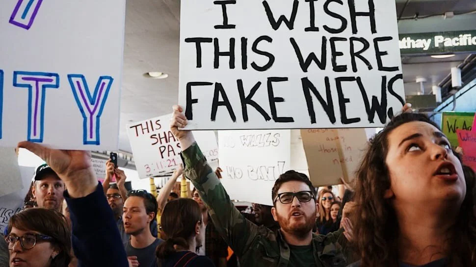
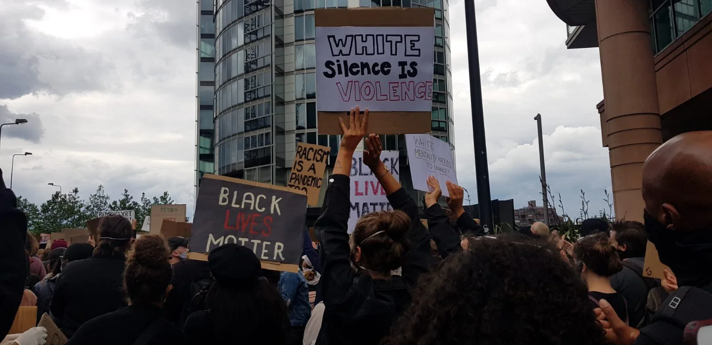
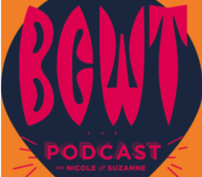
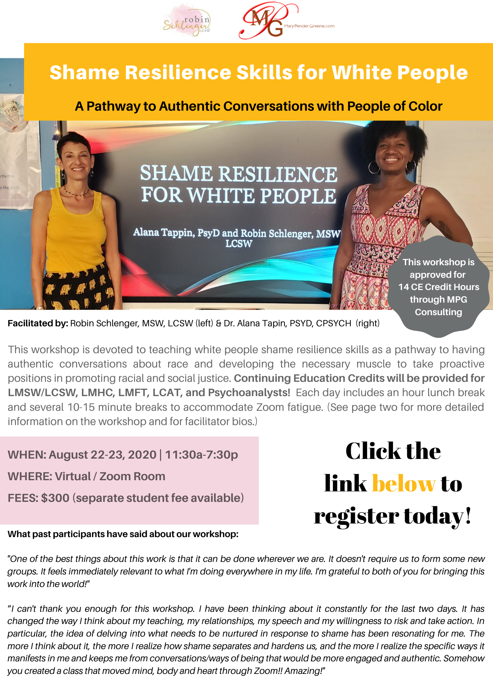
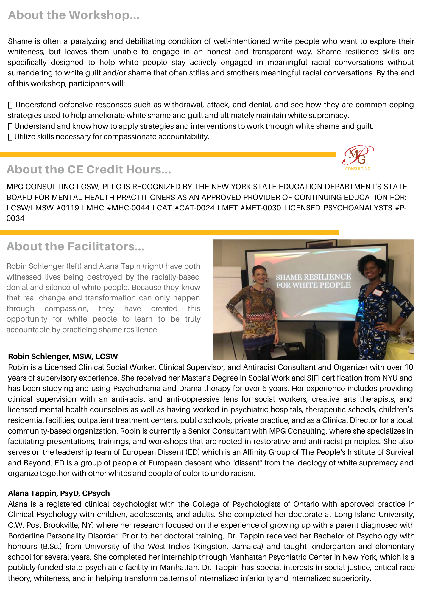

2020-07-16
The Other Side Of Independence Day
I have to say, my blogs are getting harder and harder to write each month. Writing about racism and my white privilege makes me feel gross. It forces me to go to some really dark places that I would like to avoid. This month was the most difficult so far. I found myself stuck in my head and unable to get clear. I’m struggling with the idea of Independence Day. How can we celebrate independence knowing that we intentionally enslaved, tortured, and murdered Black and Indigenous people? How do I celebrate knowing that that trauma still lives within all of our bodies? I understand deeply that I have to sit in the pain and discomfort of all of this complexity and go to those dark places of reckoning so that I can heal myself and be part of the healing of our collective humanity.
See you on the journey,
Robin
Embedded media (requires internet): //www.youtube.com/embed/NBe5qbnkqoM?feature=youtu.be&wmode=opaque&enablejsapi=1
“What to The Slave is the Fourth of July?”
In this video, descendants of Fredrick Douglass read from his speech. I’ve heard this speech before and it's powerful to see it being read by Fredrick Douglass' descendants. It was a very uncomfortable reminder to me about the inequity, oppression, dehumanization, and cognitive dissonance that continues to exist in this country and in us as individuals.

“I Willingly Practice and Support 'Revisionist History', and You Should Too” by Sam Heath. The author wrote this article in defense of the 1619 project.
My 81-year-old father has been very supportive of the work I do and interested in learning, AND the other day he said it was frustrating that people were trying to change history and was concerned that it would be “erased.” He was referencing what he has been reading in the paper about the taking down of statues. My sister and I tried to explain that history needed to be changed because it was WRONG, and only written from one perspective--that of the oppressors. This article reminds me of that conversation and how deeply rooted we are in white supremacy. I remember how disoriented I felt when I first started to learn about the pieces of history that I was never taught. I imagine how terrifying it can be for those of us who do not have any race analysis. I imagine (because I have and still find these thoughts and feelings creeping into my awareness) that there is a sense that the world as you know it is about to be ripped apart and you don’t know where you will be left standing in it. No wonder so many of us hold on for “dear life” (lashing out verbally and physically, running away, freezing in silence and immobility). Our “fear” as white people is what is killing black and brown people. What we really need to be afraid of is the loss of our humanity.
Link to article: https://medium.com/the-polis/i-willingly-practice-and-support-revisionist-history-and-you-should-too-c4b2a1935526

“Dear White Protesters, You Are Not ‘Supporting’ Black People in Their Fight: It Is Your Fight, We Simply Raised the Banner” by Keno Ogbo
Keno Ogbo reminds us that racism is a white problem, created by white people that needs to be solved by white people. I felt that this was an appropriate piece to share as we see more and more white people wanting to “do something.” As Keno says, “white people should not just be doing this work to support black people. It is OUR (white people’s) fight!” Why are you showing up and for who? I do this for my own humanity, and for my grand-daughter and nephews who will be left to live in the world I leave behind.
Link to article: https://medium.com/@kenoogbo/dear-white-protesters-you-are-not-supporting-black-people-in-their-fight-c7dd6558ad8c

I am so excited and honored to share information about the debut of But Can We Work Together, Though (BCWT). This is what my friend, and co-conspirator has to say about the podcast:
I’m proud to announce the debut of the BCWT Podcast, from me and my colleague, Nicole. BCWT Podcast was born from a circle we convened at a conference last Spring. The circle was entitled, "But Can We Work Together, Though? A Black Woman and a White Woman Get Real about the Highs And Lows of Cross Racial Relationships in Social Justice Work and Ask You to Do the Same". Our podcast is evolving, but we hope to continue holding a space to do just that, using our relationship as a starting point. Have a listen and please feel to share your thoughts, reflections and feedback--in the comments or with me directly. It's a work in progress and what we learn from you will help deepen the conversation as we go!
Podcast Link: https://www.soundbeef.com/BCWTPodcast/songs/5ef02b77e89ec900152c7f35

